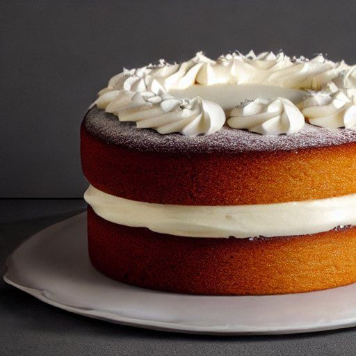

Gâteau blanc
Préparation: 15 minutes
Cuisson: 35 minutes
Total: 50 minutes
Ingrédients
-
1/2 t de beurre

-
1 t de sucre
-
2 oeuf
-
extrait de vanille
-
1 1/2 t de farine
-
2 1/2 c. à thé de poudre à pâte
-
1 pincée de sel
-
2/3 t de lait
Instructions
Crémer 1/2 t de beurre. Ajouter graduellement le sucre, les œufs, la vanille et bien battre
- 1 t de sucre
- 2 oeuf
- extrait de vanille
Dans un autre bol, mélanger la farine, la poudre à pâte et le sel.
- 1 1/2 t de farine
- 2 1/2 c. à thé de poudre à pâte
- 1 pincée de sel
Mélanger à la première préparation en alternant les ingrédients secs avec le lait.
Verser dans un moule beurré et cuire au four préchauffé à 350 degrés F pendant environ 35 min.